原画

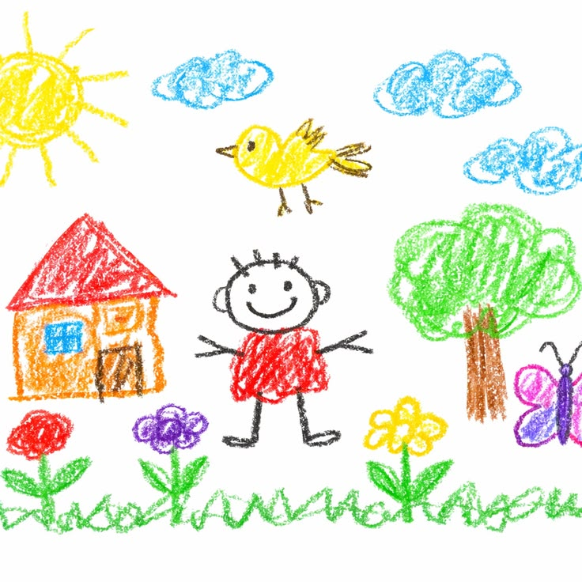
开发输入 · 原始文件
CHILDREN’S ART EXPLORER · MVP V1.0
三张开发输入、九张当前展示。立体主义三张与山坡印象派保留用户认可结果；野兽派和另外两张印象派仍是开发候选。三画派独立质量验收尚未完成。
样例使用独立生成配方，不等于应用默认配置或自动确认结果。两张新印象派人物改为背影、笔触较参照细软；山坡参照仍有疑似伪签名。
样例与复现 · 参数与哈希 · MVP 文档
开发输入 · 原始文件
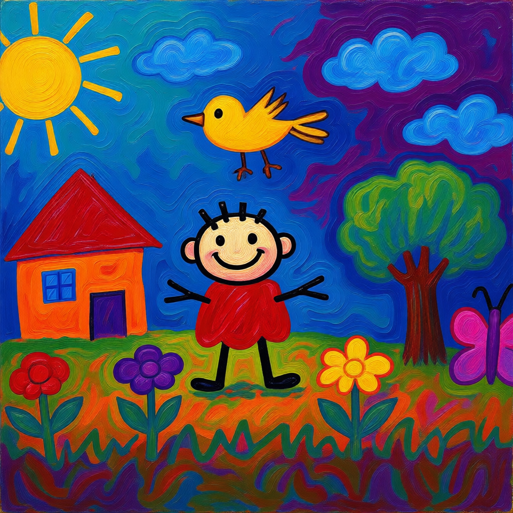
开发候选 · 未验收一人及房屋、树、鸟、云、花与蝴蝶仍可辨认；蓝紫天空和橙绿地面增强冷暖对比，蜡笔颗粒已被连续油画笔触替换。
4 steps · CFG 1.5 · seed 81401 · Lightning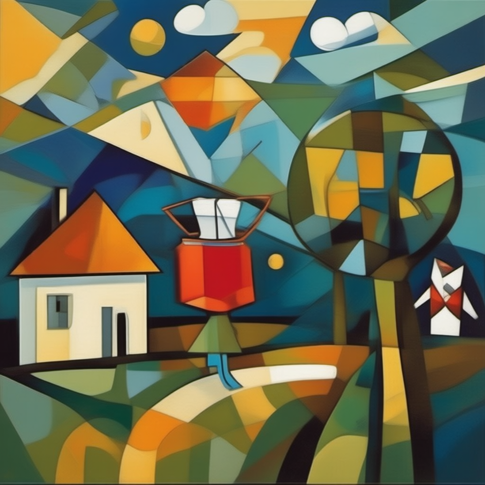
用户认可 · 保留用户认可的立体主义版本，原有角面、色块和空间重组保持原样。
20 steps · CFG 4.0 · seed 81411 · 无 LoRA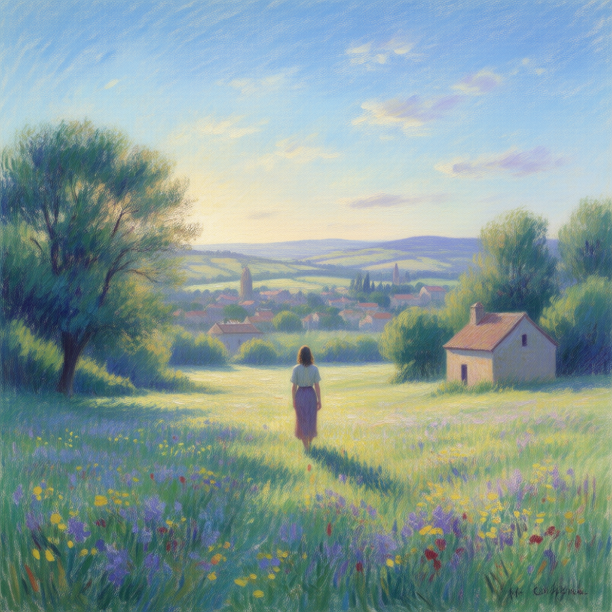
新候选 · 待评价人物、房屋、树木与花地仍可辨认，共享暖日光与蓝紫投影。鸟、蝴蝶等小元素省略，人物变为长裙背影，位置关系重组。笔触比山坡参照细软，尚待评价。
20 steps · CFG 4.0 · seed 81401 · 无 LoRA开发输入 · 原始文件
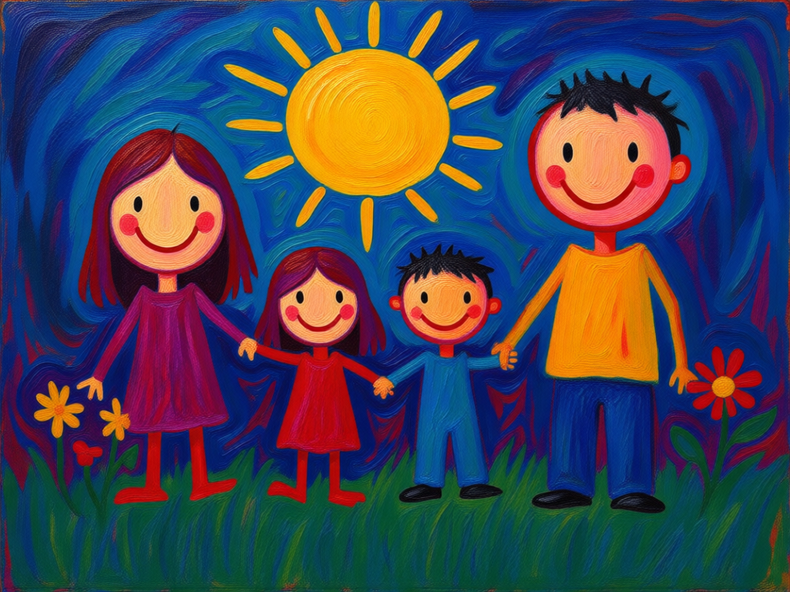
开发候选 · 未验收四人牵手与外高内矮的布局保留，人物形体重绘得更完整；背景与地面形成连续油画表面，部分衣服与肤色仍接近原图。
4 steps · CFG 1.5 · seed 81402 · Lightning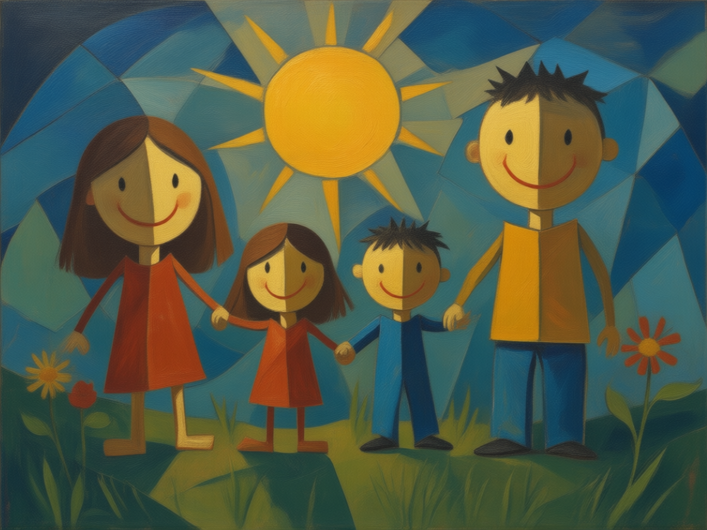
用户认可 · 保留用户认可的立体主义版本，家庭关系与几何色面处理保持原样。
20 steps · CFG 4.0 · seed 81402 · 无 LoRA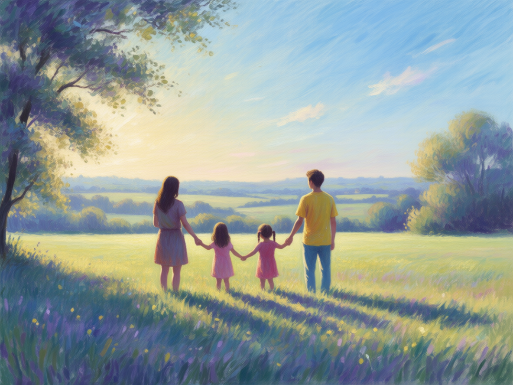
新候选 · 待评价四人牵手关系保留，人物缩小至画高约三分之一，融入树影、草地与远景田野。改为背影视角，服装形体仍偏平滑；碎色笔触的强度尚不及山坡参照。
20 steps · CFG 4.0 · seed 81403 · 无 LoRA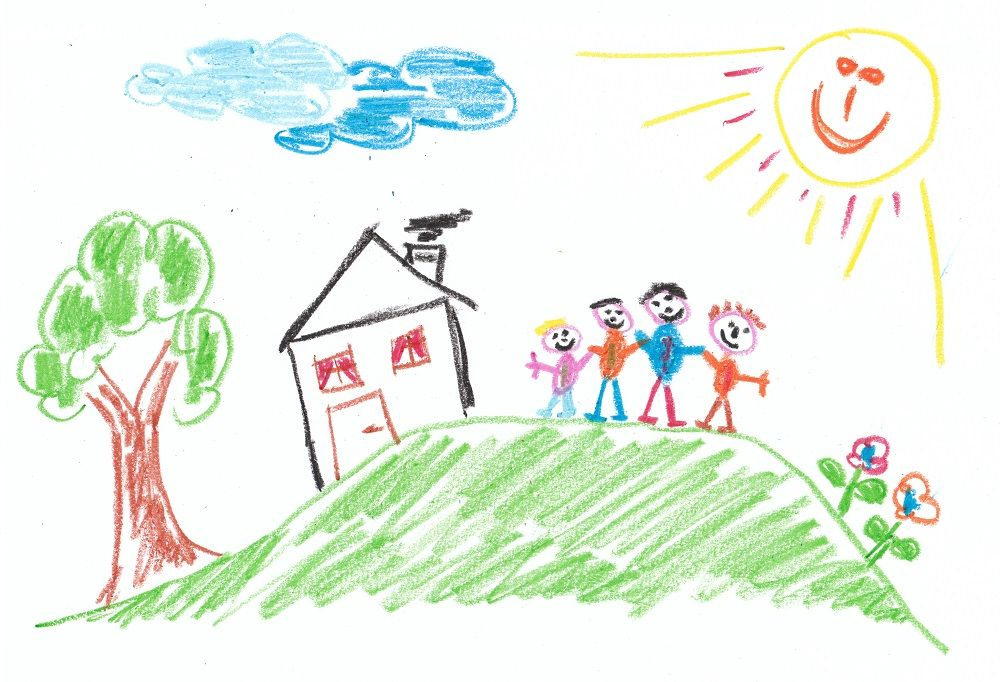
开发输入 · 原始文件
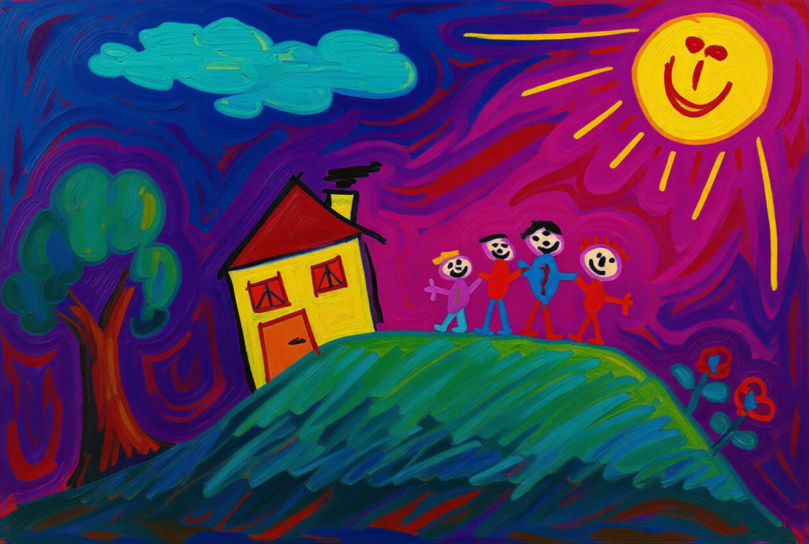
开发候选 · 未验收四人及房屋、树、花的关系保留；蓝紫、亮粉天空与青绿云朵和山坡形成大幅配色变化，原纸面与颗粒线条改为覆盖性油画笔触。
4 steps · CFG 1.5 · seed 81403 · Lightning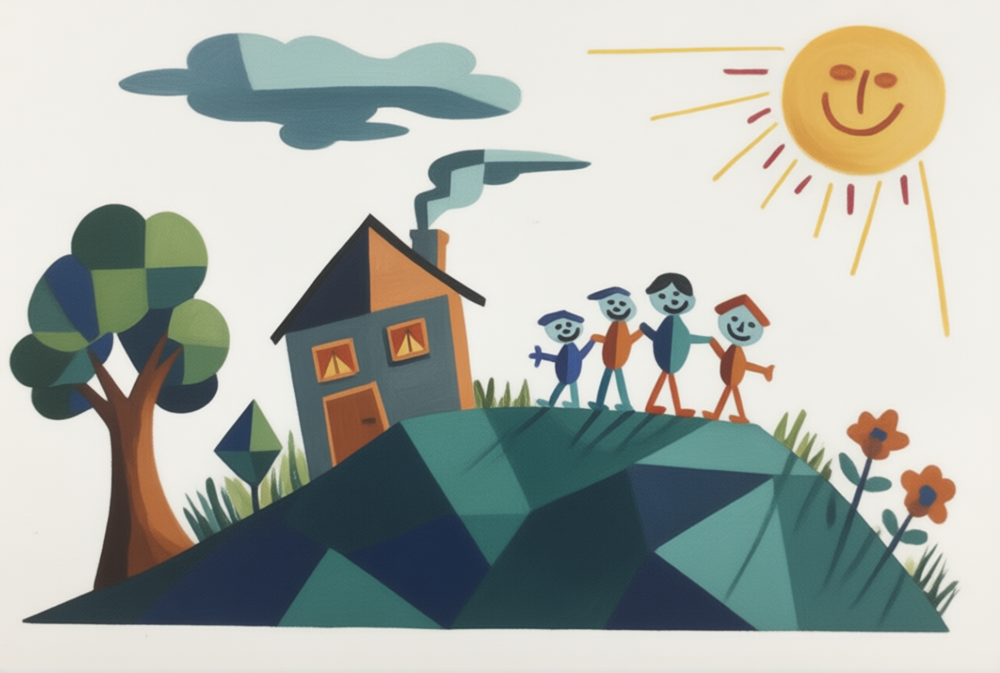
用户认可 · 保留用户认可的立体主义版本，山坡与树冠的几何处理保持原样。
20 steps · CFG 4.0 · seed 81403 · 无 LoRA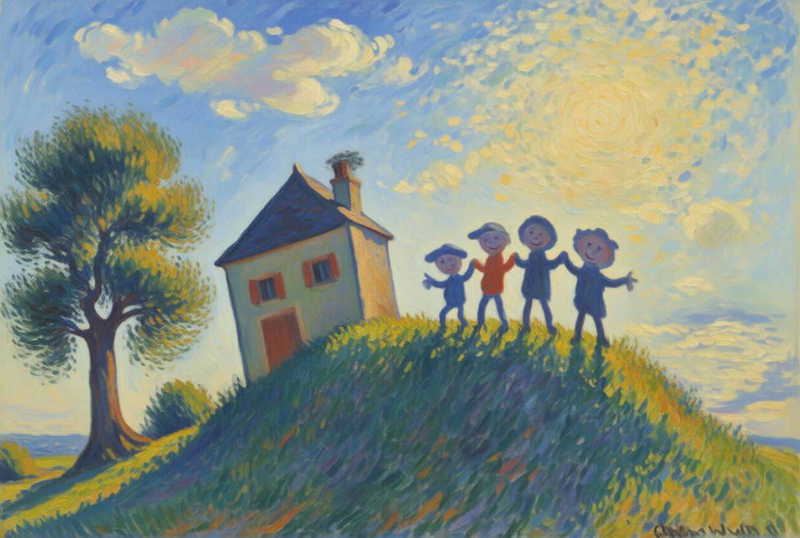
用户认可 · 视觉参照用户指定的视觉参照，原图保持不变。以明亮日光、蓝紫阴影与方向碎笔触为对照；右下角已有疑似伪签名。
20 steps · CFG 4.0 · seed 81403 · 无 LoRA